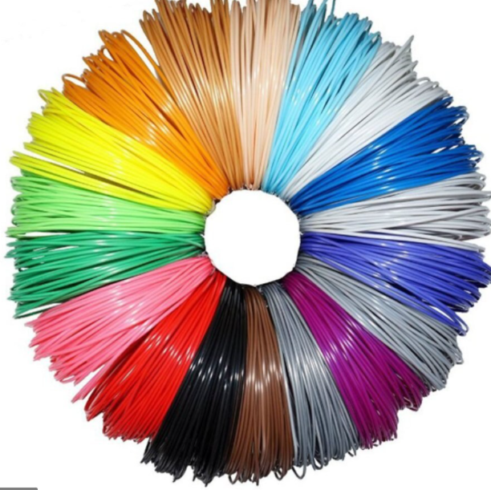
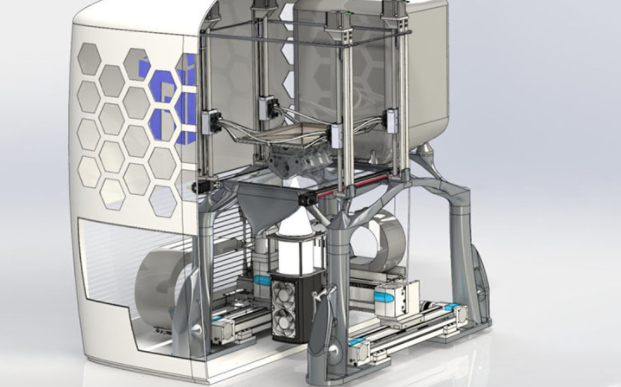

Additive manufacturing is increasing rapidly in the industry of technologies.
Additive manufacturing is playing an increasingly important role in the manufacturing industry
and is mainly used in toolmaking and prototype construction.Additive manufacturing is also known as it's industrial name 3D printing,
is a transformative approach to industrial production that enables the creation of lighter, stronger parts and systems and also creates three dimensional objects
by depositing materials usually in layer.
It is yet, another technological advancement made possible by the transition from analog to digital
processes. In recent decades, communications, imaging, architecture and engineering have all undergone their own digital revolutions. Now, Additive manufacturing
can bring digital flexibility and efficiency to manufacturing operations.
Additive manufacturing uses data computer-aided-design (CAD) software or 3D object scanners to direct hardware to deposit material,
layer upon layer, in precise geometric shapes. As its name implies, additive manufacturing adds material to create an object. By contrast,
when you create an object by traditional means, it is often necessary to remove material through milling, machining, carving, shaping or other means.
Although the terms "3D printing" and "rapid prototyping" are casually used to discuss additive manufacturing, each process is actually a subset of
additive manufacturing.The term AM encompasses many technologies including subsets like 3D Printing, Rapid Prototyping (RP), Direct Digital Manufacturing (DDM),
layered manufacturing and additive fabrication.
When did additive manufacturing invented?
Additive manufacturing which is the proper name for 3D kick-start began much earlier than some might think, almost 40 years ago in 1981,
when Hideo Kodama of the Nagoya Municipal Industrial Research Institute, published information regarding the manufacturing of a solid printed model.
A few years later, Stereolithography (SLA) was patented by Charles Hull, creating models by curing a liquid photopolymer resin using UV lasers.
Hull later commercialized the first rapid prototyping system, greatly reducing the time for designers and engineers to create 3D concepts and prototypes.
Throughout times 3D printing grows fast which Additive manufacturing is increasing rapidly now, there are a lots of revolutions that happened throughout of times
.
How Does Additive manufacturing works?
The term “additive manufacturing” references technologies that grow three-dimensional objects one superfine layer at a time.
Each successive layer bonds to the preceding layer of melted or partially melted material. Objects are digitally defined by computer-aided-design (CAD) software
that is used to create ,files that essentially "slice" the object into ultra-thin layers. This information guides the path of a nozzle or print head as it precisely
deposits material upon the preceding layer. Or, a laser or electron beam selectively melts or partially melts in a bed of powdered material. As materials cool or are
cured, they fuse together to form a three-dimensional object. Additive specializes in developing Powder Bed Fusion machines for the additive manufacturing of metal
parts.
The three processes offers with in the Powder Bed Fusion category, recognized , include: Direct Metal Laser Melting , Electron Beam Melting, Binder Jetting.
What are Additive manufacturing process?
There are variety process that can be mentioned for additive manufacturing:-
Powder bed fusion
Powder Bed Fusion technology is used in a variety of Additive manufacturing processes, including direct metal laser sintering,
selective laser sintering , selective heat sintering, electron beam melting and direct metal laser melting. These systems use lasers, electron beams or thermal
print heads to melt or partially melt ultra-fine layers of material in a three-dimensional space. As the process concludes,
excess powder is blasted away from the object.
Binder jetting
The binder jetting process is similar to material jetting, except that the print head lays down alternate layers of powdered material and
a liquid binder.
Directed energy deposition
The process of directed energy deposition is similar to material extrusion, although it can be used with a wider variety of
materials, including polymers, ceramics and metals. An electron beam gun or laser mounted on a four or five axis arm melts either wire or filament feedstock or
powder.
Material Extrusion
Material extrusion is one of the most well-known additive manufacturing processes. Spooled polymers are extruded, or drawn through
a heated nozzle mounted on a movable arm. The nozzle moves horizontally while the bed moves vertically, allowing the melted material to be built layer after layer.
Proper adhesion between layers occurs through precise temperature control or the use of chemical bonding agents.
Material Jetting
With material jetting, a print head moves back and forth, much like the head on a 2D inkjet printer. However, it typically moves
on x-, y- and z-axes to create 3D objects,Layers harden as they cool or are cured by ultraviolet light.
Sheet lamination
Laminated object manufacturing and ultrasonic additive manufacturing are two sheet lamination methods. LOM uses alternate layers of
paper and adhesive, while UAM employs thin metal sheets conjoined through ultrasonic welding. LOM excels at creating objects ideal for visual or aesthetic modeling.
UAM is a relatively low-temperature, low-energy process used with various metals, including titanium, stainless steel and aluminum.
)Vat polymerization
With vat photopolymerization, an object is created in a vat of a liquid resin photopolymer. A process called photopolymerization
cures each microfine resin layer using ultraviolet light precisely directed by mirrors.
What Are Additive Technologies
There are Four Technologies that are used in additive technologies and those are:-
Sintering
Sintering is the process of creating a solid mass using heat without liquefying it. Sintering is similar to traditional 2D
photocopying ,where toner is selectively melted to form an image on paper.
metal laser sintering
Within direct metal laser sintering , a laser sinters each layer of metal powder so that the metal particles adhere to one
another, DMLS machines produce high-resolution objects with desirable surface features and required mechanical properties. With SLS, a laser sinters
thermoplastic powders to cause particles to adhere to one another.
Direct metal laser melting and electron beam melting
By contrast, materials are fully melted in the DMLM and EBM processes. With DMLM, a laser
completely melts each layer of metal powder while EBM uses high-power electron beams to melt the metal powder. Both technologies are ideal for manufacturing
dense, non-porous objects.
Stereolithography
Stereolithography uses photopolymerization to print ceramic objects. The process employs a UV laser selectively fired into a vat of
photopolymer resin. The UV-curable resins produce torque-resistant parts that can withstand extreme temperatures.
What Are Additive Manufacturing Materials?
It is possible to use many different materials to create 3D-printed objects. Aadditive manufacturing technology fabricates jet engine parts from advanced metal
alloys, and it also creates chocolate treats and other food items.
Thermoplastics
Thermoplastic polymers remain the most popular class of additive manufacturing materials. Acrylonitrile butadiene styrene,
polylactic acid and polycarbonate each offer distinct advantages in different applications. Water-soluble polyvinyl alcohol is typically used to create temporary
support structures, which are later dissolved away.

Metals
Many different metals and metal alloys are used in additive manufacturing, from precious metals like gold and silver to strategic metals like
stainless steel and titanium.

Ceramics
A variety of ceramics have also been used in additive manufacturing, including zirconia, alumina and tricalcium phosphate. Also,
alternate layers of powdered glass and adhesive are baked together to create entirely new classes of glass products
Biochemicals
Biochemical healthcare applications include the use of hardened material from silicon, calcium phosphate and zinc to support bone
structures as new bone growth occurs. Researchers are also exploring the use of bio-inks fabricated from stem cells to form everything from blood vessels to
bladders and beyond.
Application Of Additive Manufacturing
Aerospace
Additive Manufacturing excels at producing parts with weight-saving, complex geometric designs. Therefore, it is often the perfect solution
for creating light, strong aerospace parts. For example In August 2013, NASA successfully tested an SLM-printed rocket injector during a hot fire test that
generated 20,000 pounds of thrust. In 2015, the FAA cleared the first 3D-printed part for use in a commercial jet engine. CFM's LEAP engine features
19 3D-printed fuel nozzles. At the 2017 Paris Air Show, FAA-certified, Boeing 787 structural parts fabricated from titanium wire were displayed,
according to Aviation Week.
Automotive
CNN reported that the McLaren racing team is using 3D-printed parts in its Formula race cars. A rear wing replacement took about 10 days
to produce instead of five weeks. The team has already produced more than 50 different parts using additive manufacturing. In the auto industry, Additive
Manufacturing rapid prototyping potential garners serious interest as production parts are appearing. For example, aluminum alloys are used to produce
exhaust pipes and pump parts, and polymers are used to produce bumpers.
Healthcare
At the New York University School of Medicine, a clinical study of 300 patients will evaluate the efficacy of patient-specific, multi-colored
kidney cancer models using additive manufacturing. The study will examine whether such models effectively assist surgeons with pre-operative assessments and
guidance during operations.
Product Development
As the potential for Additive manufacturing design flexibility is realized, once impossible design concepts are now being
successfully re-imagined. Additive manufacturing unleashes the creative potential of designers who can now operate free of the constraints under which they once
labored.